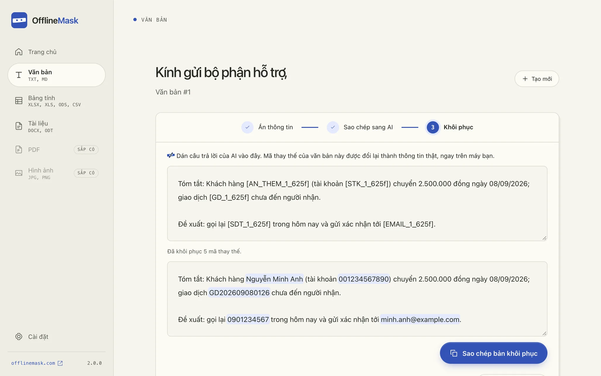

Bảng tính
Mở XLSX, XLS, ODS hay CSV. Ẩn cả cột họ tên, số điện thoại, số tài khoản rồi xuất một bản riêng để gửi AI.

OfflineMask thay tên, số tài khoản, CCCD… bằng mã ngay trên máy, trước khi bạn hỏi AI (ChatGPT, Claude, Gemini…). Dán câu trả lời vào lại, thông tin thật trở về đúng chỗ.
![Ứng dụng OfflineMask với một thư mẫu: tên, số tài khoản, mã giao dịch, số điện thoại và email đã được thay bằng mã như [STK_1_625f].](./shots/text-masked.webp)
Ảnh chụp ứng dụng thật · Dữ liệu mẫu có sẵn trong ứng dụng
Bảng lương, hợp đồng, email khách hàng: AI (ChatGPT, Claude, Gemini…) làm những việc này rất giỏi, nhưng chúng chứa đầy thông tin không nên rời khỏi công ty. Tùy dịch vụ và cài đặt, nội dung bạn gửi có thể được lưu lại, được người xem, hoặc dùng để cải thiện mô hình.
Soạn thư mời nhận việc cho Lê Thu Hà, CCCD 079198004521, gửi tới ha.le@example.com.
Đối chiếu khoản 45.000.000 đ của công ty MST 0312345678 chuyển vào tài khoản 0071000123456.
Viết lời xin lỗi chị Phạm Mai, số 0912 345 678, vì đơn hàng giao chậm ba ngày.
Rà soát hợp đồng thuê nhà của ông Trần Quốc Bảo, CCCD 079085001122, và chỉ ra điều khoản bất lợi.
Với OfflineMask, AI vẫn làm đúng việc đó.
Chỉ là không biết đó là ai.
Ví dụ minh họa. Họ tên được nhận ra khi cài gói tiếng Việt tùy chọn, hoặc khi bạn tự chọn.
Dán văn bản hoặc mở tệp. OfflineMask đánh dấu thông tin định danh; bạn xem lại, bỏ chọn phần cần giữ, và tự chọn thêm phần còn sót.

Sao chép bản đã thay mã sang công cụ AI bạn dùng (ChatGPT, Claude, Gemini…). AI vẫn đủ ngữ cảnh để tóm tắt, soạn thư hay phân tích.
Dán câu trả lời vào lại. Mỗi mã được đổi về thông tin thật, ngay trên máy, sẵn sàng để dùng tiếp.

Bảng tính
Mở XLSX, XLS, ODS hay CSV. Ẩn cả cột họ tên, số điện thoại, số tài khoản rồi xuất một bản riêng để gửi AI.
Tài liệu
Hợp đồng, biên bản dạng DOCX hay ODT. Giữ định dạng, lưu một bản đã xử lý.
Nhận diện
Thêm họ tên, địa chỉ, tổ chức với gói tiếng Việt tùy chọn. Bạn luôn xem lại trước khi gửi.
Lịch sử mã hóa
Đặt mật mã để giữ lịch sử trong kho mã hóa trên máy. Chưa đặt? Mọi thứ chỉ ở trong bộ nhớ.
Không tài khoản
Không đăng ký, không đăng nhập, không máy chủ. Mở ứng dụng là dùng được ngay.
Ẩn nhanh khi bôi đen
Bôi đen chữ trong ứng dụng khác rồi bấm nút nổi hoặc ⌘⇧M: thông tin được ẩn mà không cần mở cửa sổ. Bật trong Cài đặt; trên macOS cần quyền Trợ năng.
PDF và hình ảnh chưa được hỗ trợ. Luôn kiểm tra bản xuất trước khi chia sẻ.
Chỉ bản đã thay mã đi tới AI. Bảng đối chiếu không bao giờ rời máy. Không máy chủ, không tài khoản, không theo dõi.
Máy của bạn
[AN_THEM_1_625f][STK_1_625f][SDT_1_625f][EMAIL_1_625f]Chỉ ở trong bộ nhớ, hoặc trong kho mã hóa nếu bạn đặt mật mã.
Công cụ AI (ChatGPT, Claude, Gemini…)
Tôi là [AN_THEM_1_625f], chủ tài khoản [STK_1_625f]. Có thể
liên hệ qua số [SDT_1_625f] hoặc email [EMAIL_1_625f].
Bạn tự sao chép hoặc tải lên. OfflineMask không kết nối với AI nào.
Người làm OfflineMask
“Technology is the medium. People are the point.”
OfflineMask do Phong Phan làm, một CTO nhiều năm xây dựng phần mềm và dẫn dắt đội ngũ. Mã nguồn công khai trên GitHub, nên bạn không cần tin lời ai: mọi thay đổi đều xem lại được.
Xử lý nội dung không cần Internet. Bạn cần mạng để tải ứng dụng và, nếu muốn, tải gói nhận diện tiếng Việt từ Cài đặt. Sau khi cài, gói chạy trên máy. Không có kiểm tra cập nhật tự động.
Không. Nhận diện có thể bỏ sót hoặc chọn nhầm. Hãy rà soát gợi ý, tự ẩn thêm và kiểm tra bản xuất trước khi chia sẻ. Ẩn định danh không bảo đảm rằng ngữ cảnh còn lại không thể nhận diện một người.
Mỗi thông tin được thay bằng một mã nhất quán trong phiên. Đưa kết quả về cùng phiên để khôi phục mã còn nguyên. Nếu AI sửa hoặc xóa mã, ứng dụng không thể đoán lại thông tin.
Bản phát hành hiện chưa được ký số bằng chứng chỉ của Apple hay Microsoft, nên macOS và Windows hỏi lại trước khi mở lần đầu. Bản Windows sẽ được ký qua SignPath Foundation (code signing policy). Trong lúc chờ, bạn có thể đối chiếu tệp với SHA256SUMS.txt của bản phát hành, rồi làm theo hướng dẫn cài đặt ↗.
Không có kết nối tự động. Bạn chủ động sao chép hoặc tải bản đã ẩn lên công cụ mình chọn, rồi đưa kết quả về OfflineMask khi cần khôi phục.
Phiên bản __OM_VERSION__ · Mã nguồn mở · Không cần tài khoản
Chọn bản tải vềmacOS · Windows · Linux
SHA256SUMS.txt để đối chiếu tệp tải về · Ghi chú phát hành ↗ · Code signing policy
Đã kiểm thử thủ công trên macOS Apple Silicon; các bản khác chưa được kiểm thử đầy đủ. Bản phát hành chưa được ký số, nên máy có thể hỏi lại trước khi mở lần đầu; bản Windows sẽ được ký miễn phí qua SignPath Foundation. Cách cài và kiểm tra tệp ↗ · Code signing policy